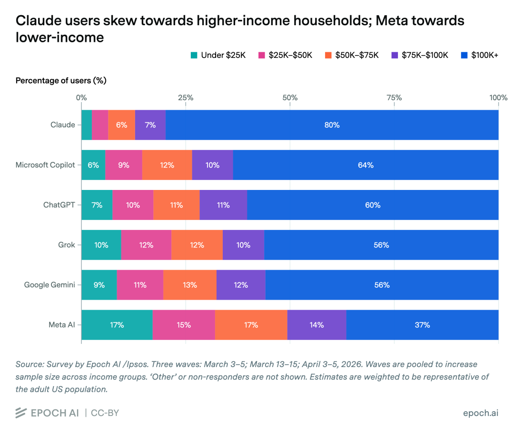
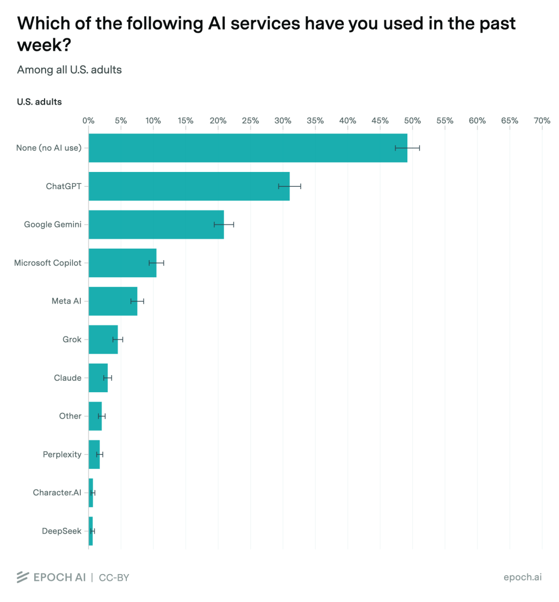
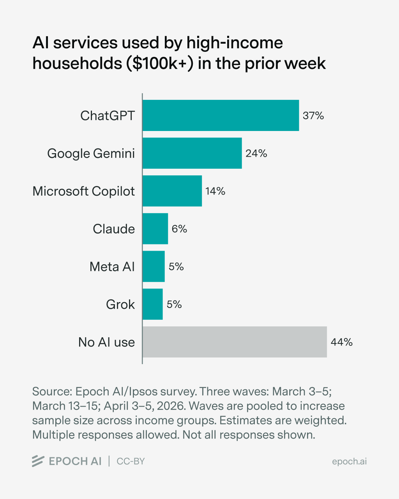
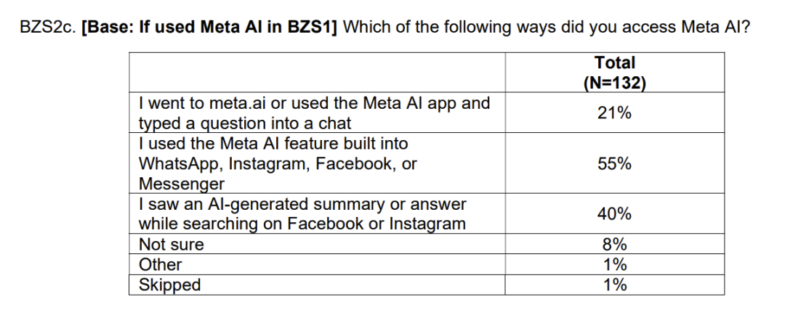
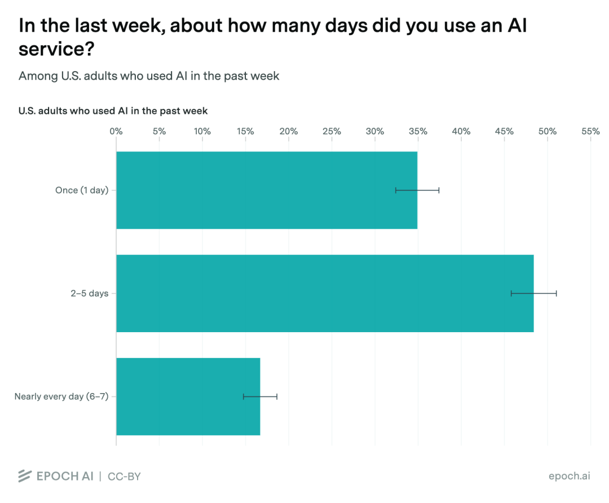
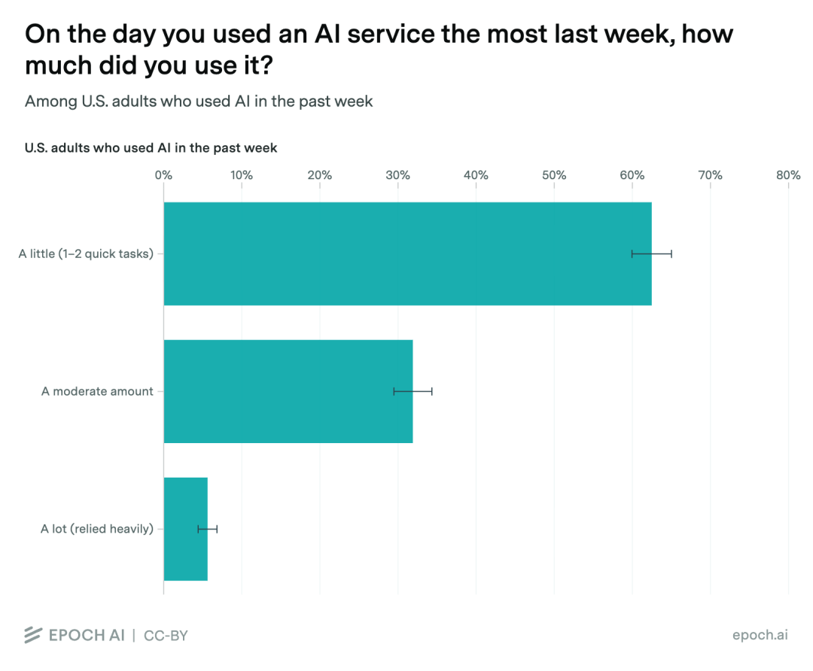
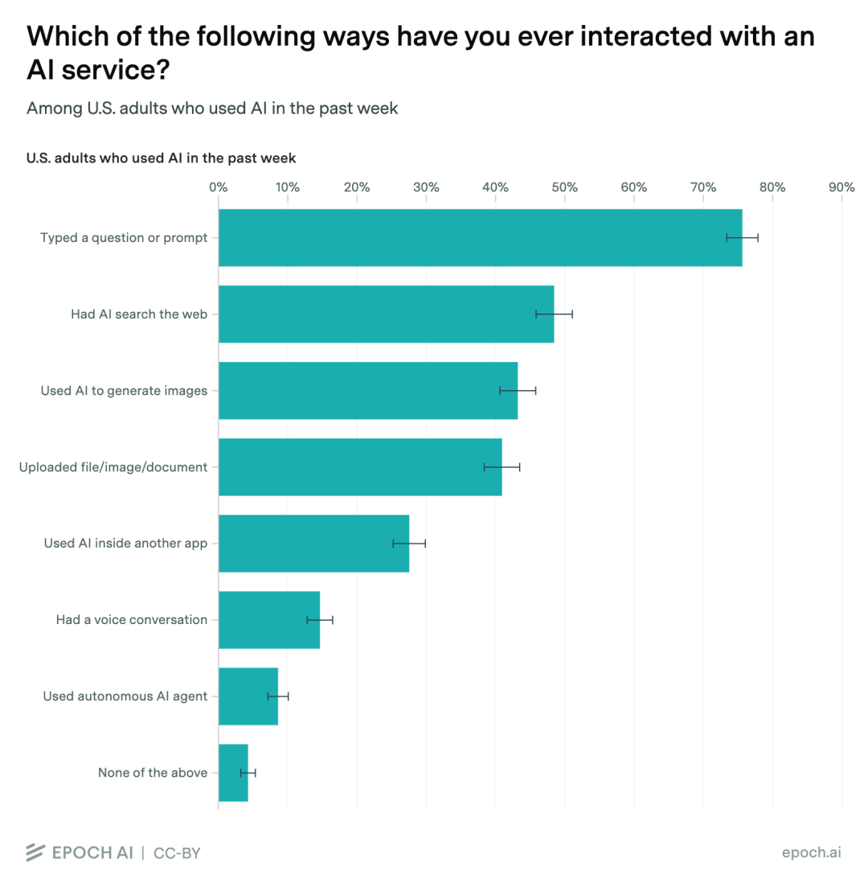
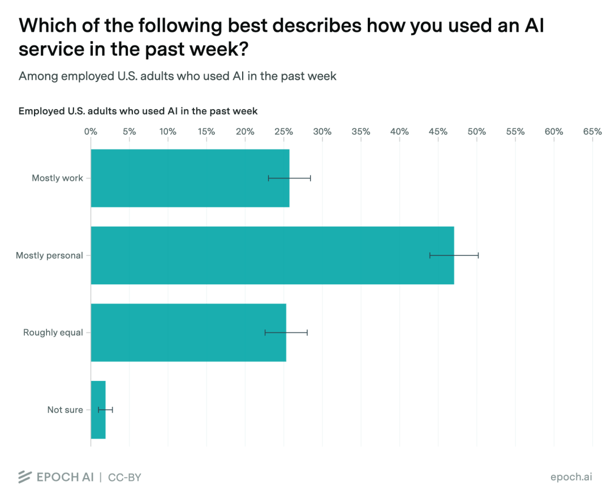
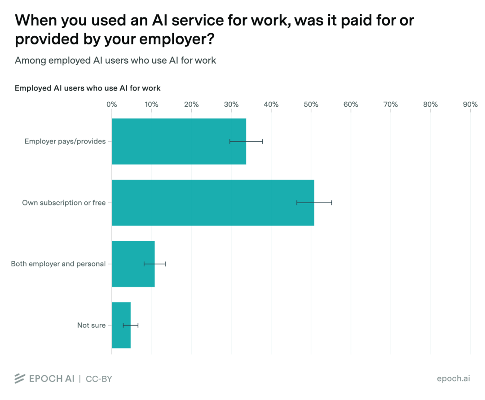
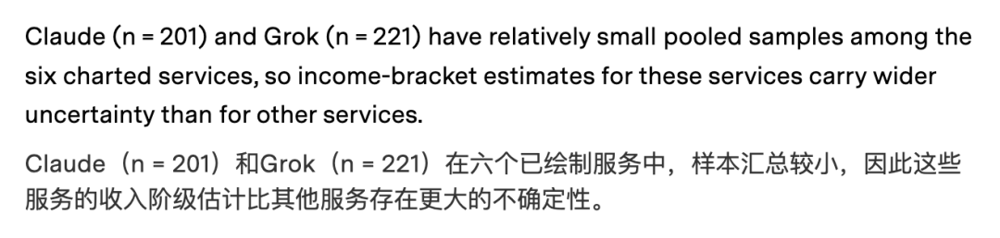

📈 谁在用Claude：美国AI用户大调查出炉
Who uses Claude: a survey of US AI users
【新智元导读】Epoch AI 与 Ipsos 调查census[ˈsɛnsəs] v. 实施统计调查显示，美国 Claude 周活用户 80% 来自年入 10 万美元以上家庭。AI 助手ally[ˈælaɪ] n. 同盟国；伙伴；同盟者；助手开始按价格、入口和工作场景分层，高收入用户率先进入更高阶的 AI 服务。
过去一周用过 Claude 的美国成年人里，79.8% 来自年收入 10 万美元以上家庭household[ˈhaʊsˌhoʊld] n. 全家人，一家人；(包括佣工在内的)家庭，户。
这个比例proportion[prəˈpɔrʃən] n. 部分；比例；均衡,相称高于 Microsoft Copilot 的 63.7%、ChatGPT 的 60.3%、Grok 的 56.2%、Google Gemini 的 55.9%，更远高于 Meta AI 的 36.5%。

作为参照，Epoch AI 用美国人口普查census[ˈsɛnsəs] n. 人口普查，人口调查数据估算，美国成年人里约 50% 生活在年收入 10 万美元以上家庭。
低收入端的差距gap[ɡæp] n. 间隙；缺口；差距；分歧同样明显。
Claude 周活用户中，年收入 5 万美元以下家庭household[ˈhaʊsˌhoʊld] n. 全家人，一家人；(包括佣工在内的)家庭，户占比约 6.4%；
Meta AI 对应correspond[ˌkɔrəˈspɑnd] vi. 通信；符合， 一致；相当于， 对应比例为 32.1%。
美国成年人总体中，年收入 5 万美元以下家庭household[ˈhaʊsˌhoʊld] n. 全家人，一家人；(包括佣工在内的)家庭，户占比约 24%。
这份调查由 Epoch AI 与 Ipsos 合作完成accomplish[əˈkɑmplɪʃ] v. 完成；实现；达到，使用 Ipsos 的 KnowledgePanel，美国成年人样本来自基于地址的概率抽样。
第一波调查census[ˈsɛnsəs] v. 实施统计调查在 2026 年 3 月 3 日至 6 日进行，样本量 2021 人，95% 置信水平下总体误差为正负 2.2 个百分点；Epoch 后续关于收入分布的分析analyze[ˈænəˌlaɪz] vt. 分析； 分解又合并了 3 月和 4 月三轮调查数据。
一个更直白的说法paradox[ˈpærədɒks] n. 悖论，似非而是的说法；自相矛盾（的情况）是，Claude 在美国已经呈现出高收入浓度。
它还没有成为大众默认入口entrance[ˈɛntrəns] n. 入口；进入，却正在成为某类人群更高频、更高强度使用的工具。

Claude 没有赢下规模
Claude 的用户更富，但 Claude 的用户规模仍然nevertheless[ˌnɛvərðəˈlɛs] adv. 仍然， 不过小。
Ipsos 这轮全国调查census[ˈsɛnsəs] v. 实施统计调查里，过去一周用过 ChatGPT 的美国成年人占 31%，Google Gemini 为 21%，Microsoft Copilot 为 11%，Meta AI 为 8%，Grok 为 5%，Claude 只有 3%。
另有 49% 的美国成年人表示bid[bɪd] v. 投标；出价；表示；吩咐，过去一周没有用过任何 AI 服务。

The Decoder 援引 Epoch AI 的说法paradox[ˈpærədɒks] n. 悖论，似非而是的说法；自相矛盾（的情况）补充了另一层数据，在年收入 10 万美元以上人群中，ChatGPT 的触达率仍为 37%，Gemini 为 24%，Copilot 为 14%，Claude 只有 6%；同时meantime[ˈminˌtaɪm] adv. 同时；其间，44% 的高收入人群过去一周没有使用 AI 服务。

所以 Claude 的情况更像是高收入浓度高，但绝对覆盖blanket[ˈblæŋkɪt] v. 覆盖，掩盖；用毯覆盖率低。
它在一个小池子里显得更精英化，在整个altogether[ˌɔltəˈgɛðər] n. 整个；裸体美国 AI 市场里还远远没有接近 ChatGPT 的默认地位。
这也解释define[dɪˈfaɪn] v. 确定，说明，界定；给…下定义，解释了为什么这组数据会有新闻价值。
过去两年，AI 公司establishment[ɪˈstæblɪʃmənt] n. 确立，制定；公司；设施大多用月活、下载量、调用量讲故事。
现在，用户结构开始commence[kəˈmɛns] v. 开始比用户规模更重要。
谁在浅尝辄止，谁在付费，谁把 AI 塞进工作流，差异开始commence[kəˈmɛns] v. 开始浮出水面。

Claude 的高收入画像，很难只用价格解释define[dɪˈfaɪn] v. 确定，说明，界定；给…下定义，解释。
Anthropic 的 Claude Pro 为每月 20 美元，Max 5x 为每月 125 美元，Max 20x 为每月 250 美元，Max 面向需要更高用量、更少中断、更优先访问新模型和功能的用户，并包含comprehend[ˌkɑmpriˈhɛnd] v. 理解；包含；由…组成 Claude Code。
OpenAI 的 ChatGPT 也有 20 美元 Plus 和更高阶 Pro 方案，个人高用量 AI 产品正在共同进入entrance[ˈɛntrəns] n. 入口；进入 100 美元、200 美元价格带。
ChatGPT 更像全民入口entrance[ˈɛntrəns] n. 入口；进入。
Gemini 绑在 Google 搜索hunt[hənt] v. 打猎； 猎取；搜索； 寻找、Gmail、Docs 等场景里。
Copilot 跟 Microsoft 365、Word、Excel、Teams、Edge 连接connexion[kəˈnɛkʃən] n. 联系， 连接更深。
Meta AI 则直接进入entrance[ˈɛntrəns] n. 入口；进入 WhatsApp、Instagram、Facebook、Messenger。
Claude 的典型使用场景更偏主动访问、长文本处理、代码、复杂写作和专业任务assignment[əˈsaɪnmənt] n. 任务；作业。
它要求用户知道自己为什么打开它，也更容易吸引absorb[əbˈzɔrb] v. 吸收；吸引；承受；理解；使…全神贯注已经愿意为效率付费的人。
Ipsos 的付费订阅数据也说明define[dɪˈfaɪn] v. 确定，说明，界定；给…下定义，解释了这一点。
ChatGPT 付费订阅中，4% 的受访者表示bid[bɪd] v. 投标；出价；表示；吩咐自己付费，3% 表示由雇主或学校付费；Claude 对应correspond[ˌkɔrəˈspɑnd] vi. 通信；符合， 一致；相当于， 对应比例都是 1%；Copilot 则有 5% 自费、10% 由雇主employer[ɪmˈplɔɪər] n. 雇主，老板或学校付费。
Claude 的付费面很窄，但这部分highlight[ˈhaɪˌlaɪt] n. 最精彩的部分人更可能是高意愿、高强度用户。
这就是 Anthropic 现在的位置shell[ʃɛl] v. 剥落；设定命令行解释器的位置，规模小，单个用户价值可能更高。
它不像 Meta AI 那样靠社交产品铺开，也不像 Google 那样靠搜索入口捎带分发dish[dɪʃ] v. 盛于碟盘中；分发；使某人的希望破灭；说（某人）的闲话。
Claude 需要用户主动选择elect[ɪˈlɛkt] v. 选举,推选；选择,作出选择。
但主动选择elect[ɪˈlɛkt] v. 选举,推选；选择,作出选择，本身就是门槛。

Meta AI 站在另一端
Meta AI 是这张表里的另一端。
它的周活用户中，年收入 10 万美元以上家庭占比只有 36.5%，5 万美元以下家庭占比达到accomplish[əˈkɑmplɪʃ] v. 完成；实现；达到 32.1%。
在这组主流 AI 助手ally[ˈælaɪ] n. 同盟国；伙伴；同盟者；助手里，它最接近大众市场。
Ipsos 调查显示，在用过 Meta AI 的人里，55% 通过 WhatsApp、Instagram、Facebook 或 Messenger 内置功能接触它，40% 是在 Facebook 或 Instagram 搜索时看到 AI 生成摘要abstract[ˈæbˌstrækt] n. 摘要，梗概或答案，只有 21% 是去 meta.ai 或 Meta AI 应用里输入问题。

Meta AI 被放进社交网络，Gemini 被放进搜索hunt[hənt] v. 打猎； 猎取；搜索； 寻找，Copilot 被放进办公软件。
Claude 则更多依赖用户带着明确任务assignment[əˈsaɪnmənt] n. 任务；作业进入产品。
这会带来完全不同的diverse[dɪˈvərs] adj. 多种多样的,不同的商业后果。
Meta AI 可以接触更广泛的comprehensive[ˌkɑmpriˈhɛnsɪv] adj. 综合的；广泛的；有理解力的人群，但用户意图更分散，很多互动可能只是顺手一问。
Claude 的用户少，但更像带着工作问题进门，需求更清晰，也更容易facilitate[fəˈsɪləˌteɪt] v. 促进；帮助；使容易被转化为订阅、API 调用或企业采购。
AI 市场正在重演消费consume[kənˈsum] v. 消耗；消费；吃；喝互联网和生产力软件的老故事，一边是巨大流量入口，一边是高 ARPU（Average Revenue Per User，每用户平均收入）工具。
前者负责覆盖blanket[ˈblæŋkɪt] v. 覆盖，掩盖；用毯覆盖，后者负责收钱。

更关键的分层，不只发生contemporary[kənˈtɛmpərˌɛri] adj. 现代的,当代的；发生[存在]于同一时代的在是否用过 AI 上，还发生在怎么用 AI 上。
Ipsos 调查显示，在过去一周用过 AI 服务的人athlete[ˈæθˌlit] n. 运动员，体育家；身强力壮的人里，34% 只用了一天，49% 用了 2 到 5 天，16% 几乎每天都用。

使用最重度的一天里，62% 只处理一两个快速任务，32% 多次使用，只有 6% 表示当天大量使用或高度altitude[ˈæltɪtjuːd] n. 高度， 海拔依赖 AI。

这说明define[dɪˈfaɪn] v. 确定，说明，界定；给…下定义，解释美国 AI 普及率看上去已经不低，但多数使用仍然很轻度。
大量用户只是把 AI 当搜索hunt[hənt] v. 打猎； 猎取；搜索； 寻找框、改写器、临时问答机；少数用户开始commence[kəˈmɛns] v. 开始把它当工作界面。

在有工作的 AI 用户中，46% 主要用于个人事务affair[əˈfɛr] n. 事情；事务；私事；（尤指关系不长久的）风流韵事，26% 主要用于工作，25% 工作和个人差不多；

在工作中使用 AI 的人athlete[ˈæθˌlit] n. 运动员，体育家；身强力壮的人里，33% 使用雇主付费或提供的服务，50% 使用个人订阅或免费服务，11% 两者都用。

这组数字放在 Claude 的收入画像旁边，会有一个更清楚的distinct[dɪˈstɪŋkt] adj. 明显的；独特的；清楚的；有区别的判断，AI 行业的下一轮竞争，很可能围绕高强度用户展开。
高强度intensity[ɪnˈtensəti] n. 强度；强烈；[电子] 亮度；紧张用户不会只问天气、写邮件、总结网页。
他们会把 AI 接进代码、合同、销售、研究、投放、采购、客服和数据分析analyze[ˈænəˌlaɪz] vt. 分析； 分解。
模型能力差距越大，工具带来的结果haul[hɔl] n. 拖，拉；用力拖拉；努力得到的结果；捕获物；一网捕获的鱼量；拖运距离差距越大。
Anthropic 自己的 Project Deal 实验experiment[ɪkˈspɛrəmənt] n. 实验，试验；尝试提供了一个有意思的旁证。
实验中，不同 Claude 模型代理员工在内部bosom[ˈbʊzəm] n. 胸；胸怀；中间；胸襟；内心；乳房；内部市场买卖真实物品。
更强的 Opus 模型作为卖方，平均能为同一件商品commodity[kəˈmɑdəti] n. 商品多卖 2.68 美元；作为买方，平均少付 2.45 美元。
当 Opus 卖方面angle[ˈæŋgəl] n. 角度，角，方面对 Haiku 买方，平均成交价为 24.18 美元，高于 Opus 对 Opus 交易的 18.63 美元。
更微妙的delicate[ˈdɛləkət] adj. 微妙的；精美的，雅致的；柔和的；易碎的；纤弱的；清淡可口的是，处在劣势的用户并没有清楚感知自己吃亏。
这类实验规模很小，也发生在公司内部，不能直接推到整个altogether[ˌɔltəˈgɛðər] n. 整个；裸体商业世界。但方向很清楚clarity[ˈklærəti] n. 清楚，明晰；透明。
当 AI 开始代表ambassador[æmˈbæsədər] n. 大使；特使，(派驻国际组织的)代表人谈判、采购、写代码、做研究，模型能力就会变成一种新的生产资料。
谁用更强的模型，谁更早把模型放进工作流，谁就可能获得更好的结果haul[hɔl] n. 拖，拉；用力拖拉；努力得到的结果；捕获物；一网捕获的鱼量；拖运距离。
差距会藏在每一次小决策counsel[ˈkaʊnsəl] n. 法律顾问；忠告；商议；讨论；决策里。
这份调查对几家公司指向不同的diverse[dɪˈvərs] adj. 多种多样的,不同的问题。
对 Anthropic，Claude 的高收入画像portrait[ˈpɔrtrət] n. 肖像,画像是利好，也是压力。
利好在于，它证明 Claude 已经吸引absorb[əbˈzɔrb] v. 吸收；吸引；承受；理解；使…全神贯注到一批更可能付费、更可能高强度使用的用户。
压力在于consist[kənˈsɪst] v. (in)在于；(of)由…组成,由…构成，Claude 仍然太小。
3% 的周使用率，支撑brace[breɪs] vt. 使防备， 使受锻炼；支撑； 使绷紧不了一个大众平台叙事。
Anthropic 需要继续提高高端用户价值，同时找到更低门槛的分发方式alike[əˈlaɪk] adv. 以同样的方式；类似于。
对 OpenAI，ChatGPT 仍是默认入口entrance[ˈɛntrəns] n. 入口；进入。
它在总体周使用率和高收入proceed[pərˈsid] n. 收入，获利人群触达上都领先。
真正的authentic[əˈθɛnɪk] adj. 真正的，真实的；可信的挑战是，把规模优势转化为更高阶的工作流锁定，避免高价值用户在代码、研究、长文档等场景里流向 Claude。
对 Meta，Meta AI 的低收入占比更高，反而说明它接近approximate[əˈprɑksəˌmeɪt] v. (to)接近大众。
它的商业化路径可能不会像 Claude 那样靠高价订阅，而更像广告、推荐commend[kəˈmɛnd] v. 推荐；称赞；把…委托、搜索、内容消费入口的延伸。
对广告主和企业软件公司establishment[ɪˈstæblɪʃmənt] n. 确立，制定；公司；设施，这是一张早期用户地图。
不同 AI 助手ally[ˈælaɪ] n. 同盟国；伙伴；同盟者；助手背后，可能对应不同购买力、不同任务类型、不同转化路径。
ChatGPT 代表最大默认入口，Claude 代表更高收入和更专业的specialist[ˈspɛʃəlɪst] adj. 专家的；专业的使用倾向，Copilot 代表办公软件里的企业分发，Gemini 代表搜索和 Google 生态，Meta AI 代表社交网络里的大众触达。
当然，数据也要谨慎caution[ˈkɔʃən] n. 小心，谨慎；警告，警示看。
Epoch AI 在收入分析analyze[ˈænəˌlaɪz] vt. 分析； 分解中说明，Claude 样本量为 201，Grok 为 221，相比 ChatGPT、Gemini 样本更小，置信区间更宽；

调查是横截面样本，使用情况来自自我报告，可能有回忆误差和误分类breakdown[ˈbreɪkˌdaʊn] n. 故障；崩溃；分解；分类；衰弱；跺脚曳步舞。
AI 不会只按模型能力capability[ˌkeɪpəˈbɪləti] n. 能力排序，也会按用户阶层、入口位置、付费意愿和工作强度重新排队。
过去两年，行业一直在关注谁的模型更强。
接下来，更有价值的问题会变成，谁在用最强的模型，谁为它付钱，谁把它变成日常工作harness[ˈhɑrnɪs] n. 马具；甲胄；挽具状带子；降落伞背带；日常工作的一部分。
https://epoch.ai/data-insights/service-by-income
https://epoch.ai/data/polling
https://www.ipsos.com/sites/default/files/ct/news/documents/2026-04/Topline_Epoch%20AI%20-%20Ipsos%20National%20AI%20Usage%20Survey_0.pdf